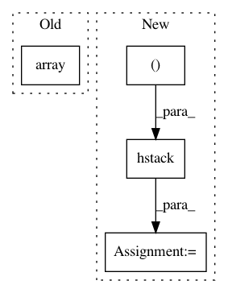

cddf39be59c3c1231d2d4fd3b9bfc10a21e63780,imblearn/under_sampling/prototype_generation/cluster_centroids.py,ClusterCentroids,_sample,#ClusterCentroids#Any#Any#,107
Before Change
X_resampled = np.concatenate((X_resampled, centroids), axis=0)
y_resampled = np.concatenate(
(y_resampled, np.array([target_class] * n_samples)),
axis=0)
else:
After Change
else:
target_class_indices = np.flatnonzero(y == target_class)
idx_under = np.concatenate(
(idx_under, target_class_indices), axis=0)
X_resampled = np.concatenate((centroids))
if sparse.issparse(X):
X_resampled = sparse.vstack([sparse.csr_matrix(X_resampled),
safe_indexing(X, idx_under)])
else:
X_resampled = np.vstack((X_resampled, safe_indexing(X, idx_under)))
y_resampled = np.hstack((y_resampled, safe_indexing(y, idx_under)))
return X_resampled, np.array(y_resampled)
In pattern: SUPERPATTERN
Frequency: 3
Non-data size: 4
Instances
Project Name: scikit-learn-contrib/imbalanced-learn
Commit Name: cddf39be59c3c1231d2d4fd3b9bfc10a21e63780
Time: 2017-08-24
Author: g.lemaitre58@gmail.com
File Name: imblearn/under_sampling/prototype_generation/cluster_centroids.py
Class Name: ClusterCentroids
Method Name: _sample
Project Name: vc1492a/PyNomaly
Commit Name: 2526879b1f941c887eeb24a267b5ea010e20d5d7
Time: 2017-12-17
Author: vc1492a@gmail.com
File Name: PyNomaly/loop.py
Class Name: LocalOutlierProbability
Method Name: _ssd
Project Name: biolab/orange3
Commit Name: 2ae65e9228b67ebef61f03653f26075cb9940e51
Time: 2013-11-14
Author: anze.staric@gmail.com
File Name: Orange/widgets/utils/scaling.py
Class Name: ScaleData
Method Name: set_data